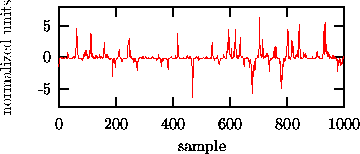
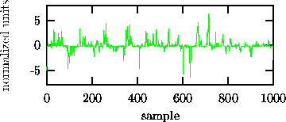
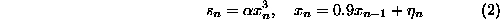

A nonlinear approach to analysing time series data [1, 2, 3, 4, 5] can be motivated by two distinct reasons. One is intrinsic to the signal itself while the other is due to additional knowledge we may have about the nature of the observed phenomenon. As for the first motivation, it might be that the arsenal of linear methods has been exploited thoroughly but all the efforts left certain structures in the time series unaccounted for. As for the second, a system may be known to include nonlinear components and therefore a linear description seems unsatisfactory in the first place. Such an argument is often heard for example in brain research -- nobody expects for example the brain to be a linear device. In fact, there is ample evidence for nonlinearity in particular in small assemblies of neurons. Nevertheless, the latter reasoning is rather dangerous. The fact that a system contains nonlinear components does not prove that this nonlinearity is also reflected in a specific signal we measure from that system. In particular, we do not know if it is of any practical use to go beyond the linear approximation when analysing the signal. After all, we do not want our data analysis to reflect our prejudice about the underlying system but to represent a fair account of the structures that are present in the data. Consequently, the application of nonlinear time series methods has to be justified by establishing nonlinearity in the time series.
Suppose we had measured the signal shown in Fig. 1 in some biological setting. Visual inspection immediately reveals nontrivial structure in the serial correlations. The data fails a test for Gaussianity, thus ruling out a Gaussian linear stochastic process as its source. Depending on the assumptions we are willing to make on the underlying process, we might suggest different origins for the observed strong ``spikyness'' of the dynamics. Superficially, low dimensional chaos seems unlikely due to the strong fluctuations, but maybe high dimensional dynamics? A large collection of neurons could intermittently synchronise to give rise to the burst episodes. In fact, certain artificial neural network models show qualitatively similar dynamics. The least interesting explanation, however, would be that all the spikyness comes from a distortion by the measurement procedure and all the serial correlations are due to linear stochastic dynamics. Occam's razor tells us that we should be able to rule out such a simple explanation before we venture to construct more complicated models.
Surrogate data testing attempts to find the least interesting explanation
that cannot be ruled out based on the data. In the above example, the data
shown in Fig. 1, this would be the hypothesis that the data
has been generated by a stationary Gaussian linear stochastic process
(equivalently, an autoregressive moving average or ARMA process) that is
observed through an invertible, static, but possible nonlinear observation
function:
Neither the order M,N, the ARMA coefficients, nor the function  are
assumed to be known. Without explicitly modeling these parameters, we still
know that such a process would show characteristic linear correlations
(reflecting the ARMA structure) and a characteristic single time probability
distribution (reflecting the action of
are
assumed to be known. Without explicitly modeling these parameters, we still
know that such a process would show characteristic linear correlations
(reflecting the ARMA structure) and a characteristic single time probability
distribution (reflecting the action of  on the original Gaussian
distribution). Figure 2 shows a surrogate time series
that is designed to have exactly these properties in common with the data but
to be as random as possible otherwise. By a proper statistical test we can now
look for additional structure that is present in the data but not in the
surrogates.
on the original Gaussian
distribution). Figure 2 shows a surrogate time series
that is designed to have exactly these properties in common with the data but
to be as random as possible otherwise. By a proper statistical test we can now
look for additional structure that is present in the data but not in the
surrogates.

Figure: A time series showing characteristic bursts.

Figure: A surrogate time series that has the same single time probability distribution and the same autocorrelation function as the sequence in Fig. 1. The bursts are fully explained by these two properties.
In the case of the time series in Fig. 1, there is no
additional structure since it has been generated by the rule

where  are Gaussian independent increments and
are Gaussian independent increments and  is chosen
so that the data have unit variance.
is chosen
so that the data have unit variance. This means that the strong nonlinearity that generates the bursts is due to the
distorted measurement that enhances ordinary fluctuations, generated by linear
stochastic dynamics.
This means that the strong nonlinearity that generates the bursts is due to the
distorted measurement that enhances ordinary fluctuations, generated by linear
stochastic dynamics.
In order to systematically exclude simple explanations for time series observations, this paper will discuss formal statistical tests for nonlinearity. We will formulate suitable null hypotheses for the underlying process or for the observed structures themselves. In the former case, null hypotheses will be extensions of the statement that the data were generated by a Gaussian linear stochastic processes. The latter situation may occur when it is difficult to properly define a class of possibly underlying processes but we want to check if a particular set of observables gives a complete account of the statistics of the data. We will attempt to reject a null hypothesis by comparing the value of a nonlinear parameter taken on by the data with its probability distribution. Since only exceptional cases allow for the exact or asymptotic derivation of this distribution unless strong additional assumptions are made, we have to estimate it by a Monte Carlo resampling technique. This procedure is known in the nonlinear time series literature as the method of surrogate data, see Refs. [6, 7, 8]. Most of the body of this paper will be concerned with the problem of generating an appropriate Monte Carlo sample for a given null hypothesis.
We will also dwell on the proper interpretation of the outcome of such a test. Formally speaking, this is totally straightforward: A rejection at a given significance level means that if the null hypothesis is true, there is certain small probability to still see the structure we detected. Non-rejection means even less: either the null hypothesis is true, or the discriminating statistics we are using fails to have power against the alternative realised in the data. However, one is often tempted to go beyond this simple reasoning and speculate either on the nature of the nonlinearity or non-stationarity that lead to the rejection, or on the reason for the failure to reject.
Since the actual quantification of nonlinearity turns out to be the easiest -- or in any case the least dangerous -- part of the problem, we will discuss it first. In principle, any nonlinear parameter can be employed for this purpose. They may however differ dramatically in their ability to detect different kinds of structures. Unfortunately, selecting the most suitable parameter has to be done without making use of the data since that would render the test incorrect: If the measure of nonlinearity has been optimised formally or informally with respect to the data, a fair comparison with surrogates is no longer possible. Only information that is shared by data and surrogates, that is, for example, linear correlations, may be considered for guidance. If multiple data sets are available, one could use some sequences for the selection of the nonlinearity parameter and others for the actual test. Otherwise, it is advantageous to use one of the parameter free methods that can be set up with very little detailed knowledge of the data.
Since we want to advocate to routinely use a nonlinearity test whenever nonlinear methods are planned to be applied, we feel that it is important to make a practical implementation of such a test easily accessible. Therefore, one branch of the TISEAN free software package [9] is devoted to surrogate data testing. Appendix A will discuss the implementational aspects necessary to understand what the programs in the package do.